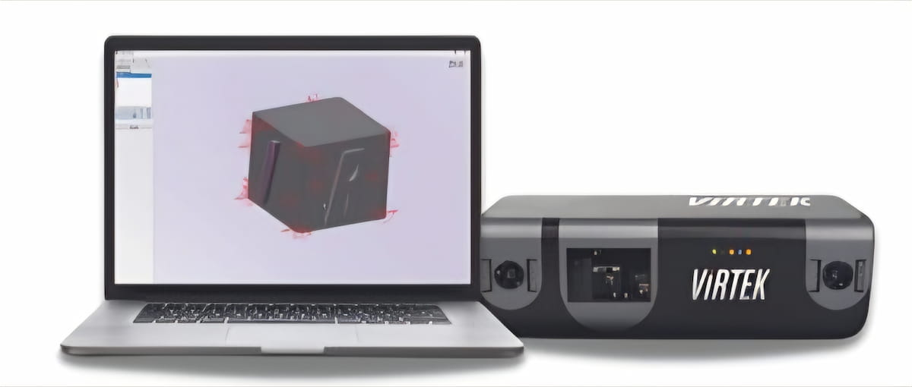

CAD 데이터를 실제 작업물 위에 레이저 가이드로 투사하여 조립과 제조 작업을 지원하는 산업용 프로젝션 솔루션

CAD-Based Laser Projection System
Virtek IRIS 3D는 CAD 데이터를 기반으로 부품과 작업면 위에 3D 레이저 가이드를 투사하여 작업자가 정확한 위치와 작업 순서를 확인할 수 있도록 지원하는 산업용 레이저 프로젝션 시스템입니다.
별도의 수작업 측정과 마킹 과정을 줄이고, 부품 배치, 조립, 마스킹 및 제조 공정을 설계 데이터에 맞춰 보다 일관되게 수행할 수 있습니다.
CAD 기반 레이저 프로젝션을 통해 작업자의 위치 확인과 제조 공정을 보다 직관적으로 지원합니다.
CAD 설계 데이터를 바탕으로 실제 작업물 위에 필요한 위치와 형상을 레이저로 직접 투사합니다.
작업자가 별도의 도면이나 수작업 마킹 없이 실제 작업 위치를 시각적으로 확인할 수 있도록 지원합니다.
작업 대상과 설계 위치를 정렬하여 필요한 위치에 레이저 가이드를 정확하게 표시할 수 있습니다.
반복되는 측정과 마킹 작업을 줄여 제조 공정의 작업 시간과 작업자 오류를 줄이는 데 도움을 줍니다.
설계 데이터를 불러온 뒤 작업 대상과 위치를 정렬하면 필요한 형상과 작업 지점을 실제 작업물 위에 레이저로 표시할 수 있습니다.
제품 및 작업 위치의 설계 데이터 준비
실제 작업 대상과 설계 좌표 정렬
작업 위치와 형상을 레이저로 투사
투사된 가이드를 따라 조립 및 제조 작업 수행
부품의 정확한 위치 지정과 반복 작업이 필요한 다양한 제조 공정에 활용할 수 있습니다.
부품의 조립 위치와 형상을 레이저로 안내하여 설계된 위치에 맞춰 작업할 수 있도록 지원합니다.
부품과 구성 요소의 정확한 설치 위치를 작업물 위에 직접 표시하는 데 활용합니다.
도장 및 마스킹 작업이 필요한 영역을 레이저 가이드로 표시하여 작업 위치 확인을 지원합니다.
복합재 적층 작업에서 재료의 위치와 형상을 레이저로 안내하여 작업 공정을 지원합니다.
설계 데이터를 작업 현장에 직접 시각화함으로써 작업자의 판단에 의존하는 반복 측정과 위치 표시 과정을 줄이고 제조 공정의 효율적인 작업 흐름을 지원합니다.
별도의 템플릿 제작이나 반복적인 수작업 마킹을 줄여 작업 준비 과정을 단순화할 수 있습니다.
실제 작업물 위에서 위치를 직접 확인할 수 있어 도면과 실제 위치를 반복 비교하는 과정을 줄입니다.
CAD 기반 가이드를 활용하여 작업자의 위치 판단 오류를 줄이는 데 도움을 줍니다.
동일한 설계 데이터를 반복 활용하여 일관된 제조 작업을 수행할 수 있도록 지원합니다.
적용 대상과 작업 공정, CAD 데이터 및 설치 환경을 확인하여 적합한 Virtek 레이저 프로젝션 시스템 적용 방안을 안내해드립니다.
제품 문의하기 →